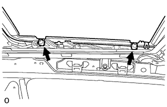

SLIDING ROOF HOUSING > INSTALLATION |
| 1. INSTALL SLIDING ROOF HOUSING SUB-ASSEMBLY |
Temporarily install the housing with the 8 bolts (vehicle body side) and 8 nuts.
Tighten the 8 nuts.
Tighten the 8 bolts.
Connect the 4 sliding roof drain hoses.
| 2. INSTALL SLIDING ROOF WEATHERSTRIP |
Install the sliding roof weatherstrip as described below.
Attach each corner of the weatherstrip so that each weatherstrip mark is aligned with the sliding roof glass center mark. After attaching the entire weatherstrip, check that all the weatherstrip marks are within the sliding roof glass end marks.
Make sure the weatherstrip cutout is toward the rear side of the vehicle and centered.
Make sure the weatherstrip is securely installed as shown in the illustration.
| *a | Cutout | *b | Rear Side |
| *c | CORRECT | *d | INCORRECT |
| 3. INSTALL SLIDING ROOF GLASS SUB-ASSEMBLY |
 |
Using a T25 "TORX" driver, temporarily install the glass with the 4 screws.
Perform a level check.
Check the difference in the level between the roof panel and upper surface of the weatherstrip labeled "a" when the sliding roof glass is fully closed.
| Area | Specified Condition |
| A - A | 0 + 1.0 mm (0 + 0.0394 in.) 0 - 2.0 mm (0 - 0.0787 in.) |
| B - B | 0 + 2.0 mm (0 + 0.0787 in.) 0 - 1.0 mm (0 - 0.0394 in.) |
| C - C | 0 + 1.5 mm (0 + 0.0591 in.) 0 - 1.5 mm (0 - 0.0591 in.) |
| D - D | 0 + 1.5 mm (0 + 0.0591 in.) 0 - 1.0 mm (0 - 0.0394 in.) |
Perform a gap check.
Check the gap between the roof panel and roof glass.
| *a | Even | - | - |
|  |
Tighten the 4 screws.
| 4. CHECK FOR WATER LEAK |
After adjusting the sliding roof glass sub-assembly, check for water leaks.
If there are any leaks, readjust the sliding roof glass sub-assembly.
| 5. INSTALL SLIDING ROOF SIDE GARNISH LH |
Attach the 5 claws to install the sliding roof side garnish.
| 6. INSTALL SLIDING ROOF SIDE GARNISH RH |
| 7. INSTALL CURTAIN SHIELD AIRBAG ASSEMBLY LH |
Install the curtain shield airbag assembly LH (Click here).
| 8. INSTALL CURTAIN SHIELD AIRBAG ASSEMBLY RH |
| 9. INSTALL ROOF HEADLINING ASSEMBLY |
Install the roof headlining assembly (Click here).
| 10. CONNECT CABLE TO NEGATIVE BATTERY TERMINAL |
| 11. CHECK SRS WARNING LIGHT |
Check the SRS warning light (Click here).